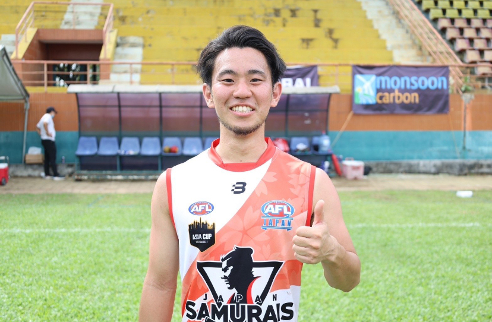

PORTFOLIO — VOL.26
● REC
HIROKI MITA 三田拓希

AUSSIE RULES
一応
ポンコツが、動画クリエイター に
Video Creator / Editor ＆ Australian Football — Japan National Team.
SCROLL ↓
VIDEO CREATOR ✷ AUSSIE RULES JAPAN ✷ 元・光回線の営業マン ✷ 整骨院たちあげ ✷ PONKOTSU ✷ LIFE SHOULD BE FUN ✷
VIDEO CREATOR ✷ AUSSIE RULES JAPAN ✷ 元・光回線の営業マン ✷ 整骨院たちあげ ✷ PONKOTSU ✷ LIFE SHOULD BE FUN ✷
00 — MANIFESTO
ゴールは、動画クリエイター じゃない。人生を、もっと面白くすること。
動画づくりは、そのための一つの手段。成功した姿じゃなく、もがいている途中をそのまま見せる。
「こんなポンコツでも挑戦してるなら、俺も何かやってみようかな」——そう思ってもらえたら勝ちです。
01 — PROFILE
SPEC SHEET本体仕様
NAME 三田 拓希 / Hiroki Mita
BORN 2000.09.28（26）
EDU 駒澤大学高校 → 駒澤大学
JOB 動画クリエイター / 編集者
SPORT サッカー（〜高校）→ オーストラリアンフットボール 日本代表
SKILL 広告動画・リール・トーク編集 / 営業 / 店舗立ち上げ / 経理 / トレーニング指導
EDIT Adobe Premiere
CAMERA SONY α7C II
NEXT 世界一周（構想中）
KNOWN BUGS既知の不具合
#01 すぐだらける#02 自分を大きく見せようとする#03 やりたいことがあっても自分に甘い#04 年収、同世代よりだいぶ低め
STATUS: アップデート配信中…
完璧になってから発信するんじゃなく、バグ込みのまま挑戦する。宣言して、逃げ道をなくすスタイル。
02 — STORY
寄り道だらけのルート 。
2000
爆誕
9月28日生まれ。ここから寄り道だらけの人生がスタート。
〜2019
サッカー漬けの高校時代
駒澤大学高校で高校まで一貫してサッカー。
2019
駒澤大学 ／ 楕円球と出会う
大学からオーストラリアンフットボールを始める。並行して、ダンス動画や面白おかしく編集した動画を投稿。コメントがつくのが嬉しくて、気づけば編集に夢中だった。
新卒
光回線の訪問販売 → 半年で退職
乗り換え営業の日々。「これ、自分じゃなくてもできるんじゃないか」「本当に必要としてない人にも売らなきゃいけない」——感謝されている実感がなく、違和感が膨らんで半年で辞めた。
約3年
整骨院の立ち上げ ＆ 高校サッカーのトレーナー
社長と一から店舗を作る。物件選び、内装業者とのやり取り、メニュー決め、総務・経理まで。並行して大学時代から続けていた高校サッカーのトレーニング指導も。濃い経験の一方、資格のない自分がこの道で拡大していくイメージは持てなかった。
2023
動画制作スタート
知り合いの社長に頼まれ、月1〜2本の広告動画を制作。「そういえば俺、結構動画が好きだよな」。人に感謝されながら、自分も楽しめる仕事かもしれない——と気づく。
2026
「ポンコツが動画クリエイターになるまで」発信開始
編集を学びながら、案件・編集者として活動中。挑戦の過程をそのまま発信している。
NEXT
世界一周…したい（構想中）
まだ決まってない。でも、言ったからにはね。
03 — WORKS
MOVIE(07)
トークリール、ドキュメンタリー風、カイジ風、YouTube長尺まで。タップで再生。
EDIT Adobe Premiere CAMERA SONY α7C II
01 / DOCUMENTARY
情熱大陸 風
02 / ORIGINAL
どこがポンコツなの
03 / カイジ風
田舎民カイジ風動画
04 / TALK REEL
トークリール
05 / TALK REEL
トークリール
06 / TALK REEL
トークリール
07 / YOUTUBE
YouTube 長尺動画
KICK ✷ MARK ✷ HANDBALL ✷ JAPAN SAMURAIS ✷ AFL ASIA CUP ✷ 楕円球に人生狂わされた男 ✷
KICK ✷ MARK ✷ HANDBALL ✷ JAPAN SAMURAIS ✷ AFL ASIA CUP ✷ 楕円球に人生狂わされた男 ✷
⚠ CAUTION ⚠ 取扱注意 ⚠ CAUTION ⚠ 取扱注意 ⚠ CAUTION ⚠ 取扱注意 ⚠ CAUTION ⚠ 取扱注意 ⚠ CAUTION ⚠ 取扱注意 ⚠
05 — FUNNY
ヤバいやつ だと分かる動画。
人柄を一番早く伝える方法、たぶんこれです。
EVIDENCE #01
EVIDENCE #02
06 — WHY I POST
1
誰かが挑戦する
やりがいを感じられなくても、生活のために働いている人がいる。成功者として教えるんじゃなく、挑戦している姿で、誰かの背中を押したい。
2
自分自身を
だらけるし、見栄も張る。だからこそ人に宣言して、自分にプレッシャーをかける。逃げずに続けるための発信です。
FOR YOU →
仕事にやりがいを感じられない人。仕方なく働いている人。何かに挑戦したい人。今の自分を変えたい人。